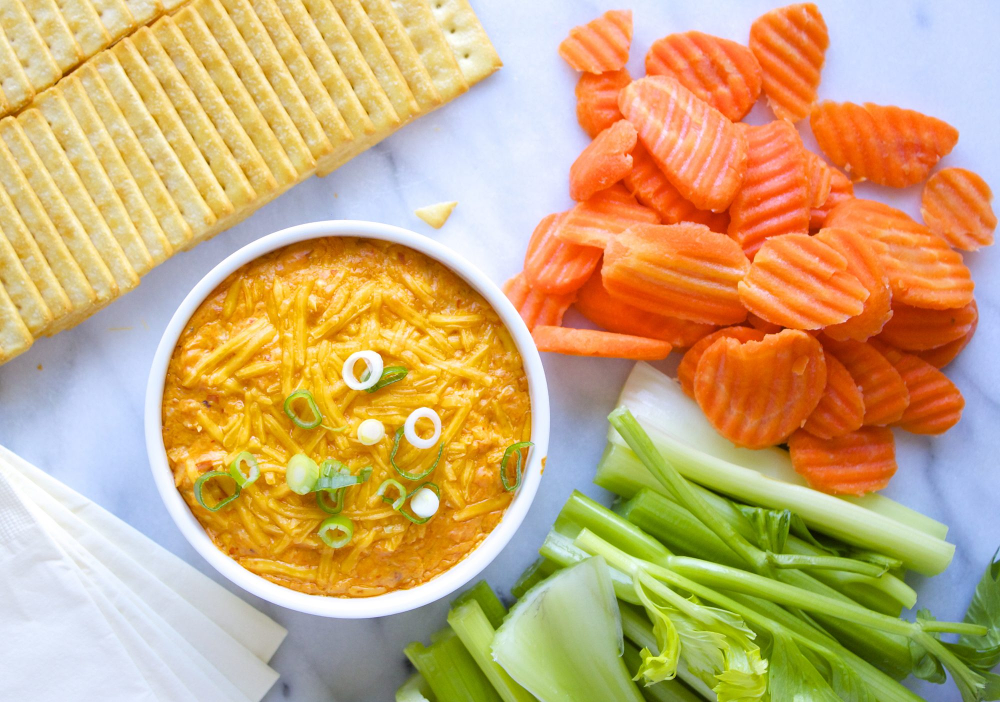

Buffalo Chicken Dip
Worlds best Buffalo Chicken Dip

Ingridients
- 2 (10 ounce) cans chunk chicken, drained
- 2 (8 ounce) packages cream cheese, softened
- 1 cup Ranch dressing
- ¾ cup pepper sauce (such as Frank's Red Hot®)
- 1 ½ cups shredded Cheddar cheese
- 1 bunch celery, cleaned and cut into 4 inch pieces
- 1 (8 ounce) box chicken-flavored crackers
Steps
- Heat chicken and hot sauce in a skillet over medium heat, until heated through. Stir in cream cheese and ranch dressing. Cook, stirring until well blended and warm. Mix in half of the shredded cheese, and transfer the mixture to a slow cooker. Sprinkle the remaining cheese over the top, cover, and cook on Low setting until hot and bubbly. Serve with celery sticks and crackers.